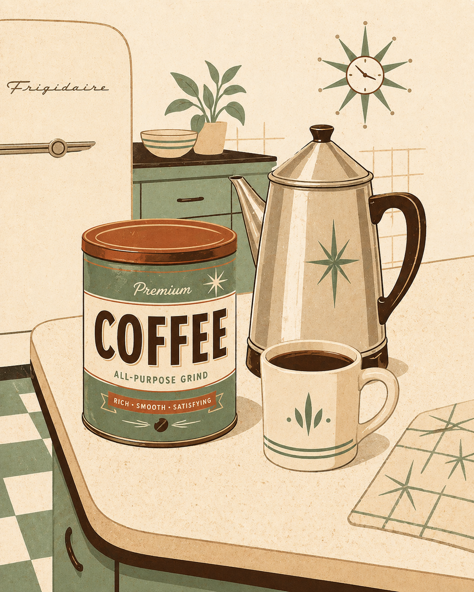
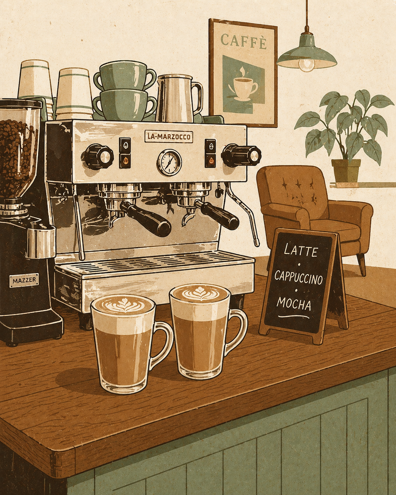
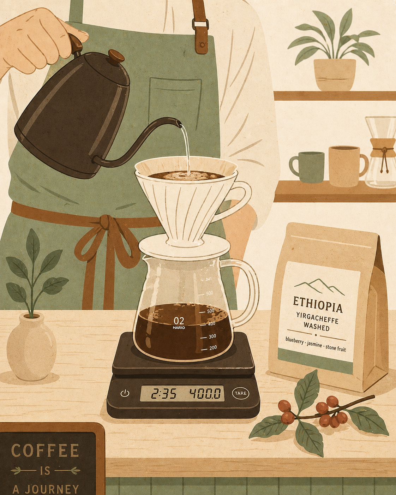
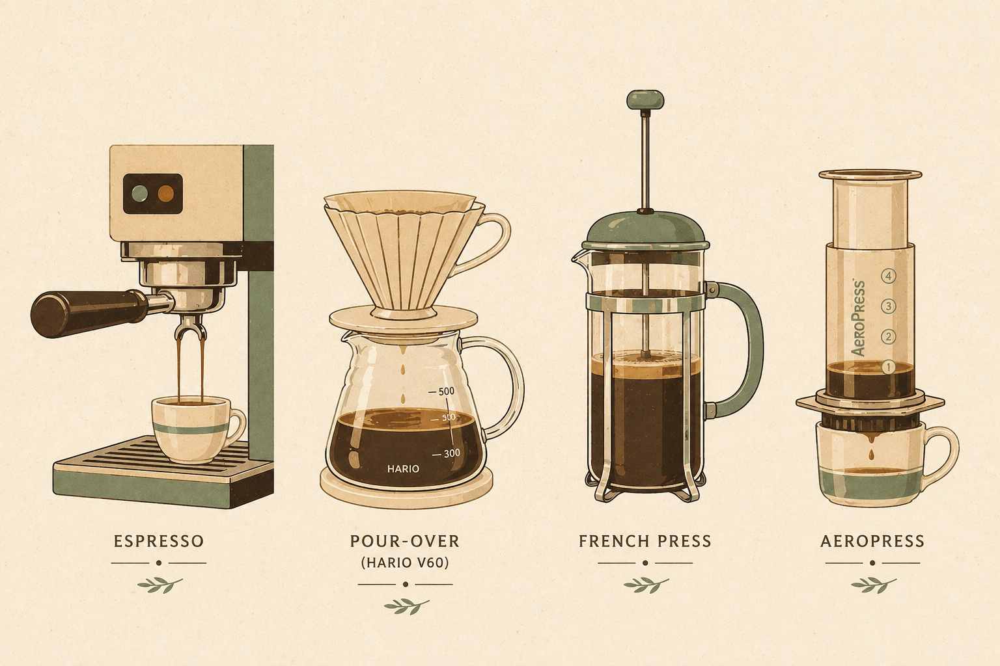
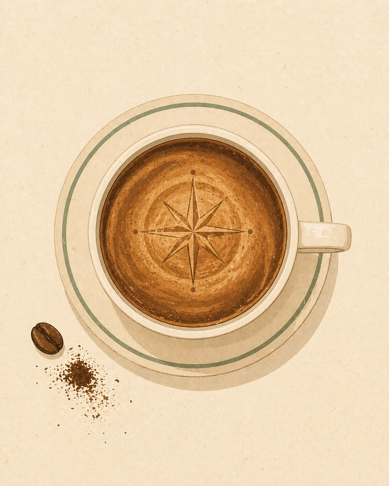

Chapter one
A goat herder, a discovery
Ethiopia · 9th century · Coffea arabica
A goat herder named Kaldi noticed his goats dancing after eating bright red berries from a wild shrub. Local monks brewed them into a drink that kept them awake through long nights of prayer — the first cup of coffee.
True or false: coffee was first discovered in South America.
Chapter two
Coffee finds the world
From Ethiopia to the Americas — by way of the great trade routes.
Coffee crossed the Red Sea to Yemen, where Sufi mystics brewed it for late-night devotion. From there it spread through Cairo, Istanbul, and into Europe — and by the 1700s, coffeehouses were called "penny universities".
Yemen · Istanbul · Venice · Vienna · Amsterdam
Match each place to its role in coffee's spread.
Chapter three · The first wave
Coffee in every cupboard
1800s — 1950s
Industrial roasting and vacuum-sealing turn coffee into a packaged good. By the post-war boom, tin cans and instant crystals are fixtures of every American kitchen, office, and diner — built for scale, shelf life, and consistency. Coffee is everywhere and daily fuel: ubiquitous, dependable, never the point.
Convenience · Consistency · Scale
Folgers · Maxwell House · Nescafé
What best describes the first wave of coffee?

Chapter four · The second wave
Coffee becomes an experience
1970s — 1990s
A backlash against bland supermarket coffee. Specialty roasters in Berkeley (Peet's, 1966) and Seattle (Starbucks, 1971) introduce espresso drinks and a vocabulary to match — lattes, cappuccinos, mochas, ordered like cocktails. The café becomes a "third place" between home and work, and coffee becomes a lifestyle defined by ritual, branding, and dark roast.
Latte · Cappuccino · Mocha · "Third place"
Peet's · Starbucks
Which best captures the second wave of coffee?

Chapter five · The third wave
Coffee as craft
2000s — today
Roasters like Stumptown (Portland), Intelligentsia (Chicago), and Counter Culture (Durham) treat coffee like wine — with attention to origin, farmer, varietal, and process. Light roasts replace dark to preserve the bean's character. Single-origin replaces blends, and bags now read like tasting menus: farm name, elevation, processing method, and flavor notes — blueberry, jasmine, stone fruit. Direct-trade relationships put the farmer back on the label.
Origin · Farmer · Process · Terroir
Stumptown · Intelligentsia · Counter Culture
Which of these would you most likely find in a third-wave café?

Chapter six · The brew lab
Build your cup
Pick an origin, roast, grind, and method. See how the variables shape your cup.

Your cup
Bright & floral
A delicate cup with high acidity, light body, and flavors of citrus, jasmine, and stone fruit. The light roast preserves the origin character of the Ethiopian beans, and the pour-over method showcases clarity.
Chapter seven · Your cup
You've completed the journey

Now go drink something good.
One last thing — match the tasting note to the description